Hồ sơ người chơi (Profile)
Cho người chơi biểu đạt danh tính bằng tên và vật phẩm trang trí, trong khi validation, quyền sở hữu và lưu server bảo vệ trạng thái hợp lệ.
7 UC có nhánh liên quan tới case quan sát. Chưa có kết luận toàn bộ tính năng hoặc mọi UC đã pass. Xem bằng chứng và phần còn thiếu.
Mô tả
- Hồ sơ gồm tên hiển thị, ảnh đại diện, token trang trí (huy hiệu bộ sưu tập), khung viền và kiểu chữ tên.
- Frame và name style có thể có hạn dùng theo thời gian (ExpireTime), ví dụ phần thưởng từ Magic Pass.
- Có 8 avatar dựng sẵn với Id "1"–"8"; DefaultSprite là id "1", ảnh Facebook dùng id "fb".
- Hồ sơ hiện ở khắp nơi: chat đội, bảng xếp hạng, danh sách bạn bè; bấm vào người chơi khác mở OtherUserProfilePopup.
- Tên bị kiểm duyệt bằng bộ lọc từ xấu (Crosstales BadWordFilter/BadWordManager) và phải dài ít nhất 3 ký tự hợp lệ.
- Bộ lọc còn xử lý leetspeak (replaceLeetAdvancedToText) nên né bằng ký tự thay thế không hiệu quả.
- Ảnh đại diện của người khác được tải qua HTTP và cache 2 tầng: bộ nhớ và file trên đĩa có catalog kèm hạn theo số phiên.
- Game có luồng bắt buộc đặt tên (force name change) chạy trong chuỗi lệnh về Home qua TryShowForceNameChangeCommand.
- Popup chỉnh hồ sơ EditProfilePopup có 4 tab: Avatar, Token, Frame, Name.
Thiết kế chi tiết
Tóm tắt thiết kế
Cho người chơi biểu đạt danh tính bằng tên và vật phẩm trang trí, trong khi validation, quyền sở hữu và lưu server bảo vệ trạng thái hợp lệ.
Xem hồ sơ → chọn thay đổi → kiểm hợp lệ/quyền sở hữu → lưu hoặc hủy → kiểm hồ sơ cuối.
Diễn giải thiết kế từ client, default và bằng chứng ngày 15–16/11 đã ghi nguồn. Nội dung mã/default không được nâng thành runtime pass; giữ nguyên full data và UC của hồ sơ.
29 ảnh chụp có nguồn · ảnh hiện ngay trong khung, bấm để mở ảnh gốc. Màu nhãn phân biệt playtest, lịch sử và ngữ cảnh.
Luồng người chơi từng bước
- 01
Xem thống kê thành tích của mình
Người chơiXem thống kê của mình.
Điều kiện / luật: Lượt 15/11 ghi level 352, FirstTryWins5 và BroomMax4; không suy đó là dữ liệu production chuẩn.
Kết quả theo đặc tả: Thành tích tạo ngữ cảnh cho avatar và huy hiệu.
15/11/2026 · Thống kê Profile sau level 351Nguồn: Profile.json · /use_cases/8 · Profile.json · Profile.json · review_cases_20261116_round2.json · cross_feature_evidence_context.json
Playtest Profile hiển thị level 352, First Try Wins 5 và Broom Max Streak 4 từ save/cache.15/11/2026 · app 0.0.3129 · fixture offlineXem case Ảnh lịch sử Hồ sơ: tên, level 321, NO TEAM; General Stats gồm Master League (Bronze → Diamond), First Try Wins, Weekly Cup Wins, Magic Streak Wins, Broom Max Streak, Jetpack Race Wins, Sky Jump Wins; nút bút chì để sửaẢnh chụp lịch sử · giữ snapshot và điều kiện trong chú thíchHồ sơ ảnh lịch sử - 02
Đổi tên hiển thị
Người chơi và clientNhập tên trống, ab rồi abc.
Điều kiện / luật: Lượt 16/11:0 hoặc 2 ký tự chưa hợp lệ,3 ký tự ASCII làm Continue xanh; không bấm Continue.
Kết quả theo đặc tả: Chứng minh nhánh validation và cancel, không chứng minh đổi tên thành công.
15/11/2026 · Tên hai ký tự bị chặn, hủy giữ tên cũ16/11/2026 · Đổi tên: blank/ab bị từ chối, abc mới là draftNguồn: Profile.json · /use_cases/1 · Profile.json · Profile.json · review_cases_20261116_round2.json · cross_feature_evidence_context.json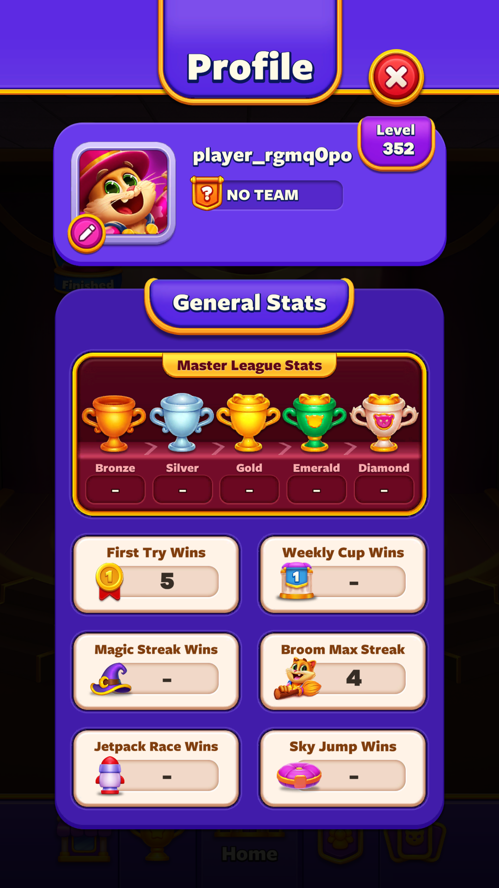
Playtest Đóng editor và quay lại Profile: tên và avatar gốc vẫn giữ, không có đổi hồ sơ thành công.16/11/2026 · app 0.0.3129 · fixture offlineXem case · Xem case Playtest Profile trước chỉnh sửa dùng làm mốc so sánh tên và avatar sau khi cancel.16/11/2026 · app 0.0.3129 · fixture offlineXem case - 03
Chọn ảnh đại diện dựng sẵn
Người chơiChọn avatar rồi đóng.
Điều kiện / luật: Checkmark chọn khác preview header; sau cancel avatar gốc vẫn giữ.
Kết quả theo đặc tả: Preview và commit là hai bước riêng.
15/11/2026 · Chọn avatar và Save khi offline16/11/2026 · Chọn avatar khác trong draft rồi đóng EditNguồn: Profile.json · /use_cases/2 · Profile.json · Profile.json · review_cases_20261116_round2.json · cross_feature_evidence_context.json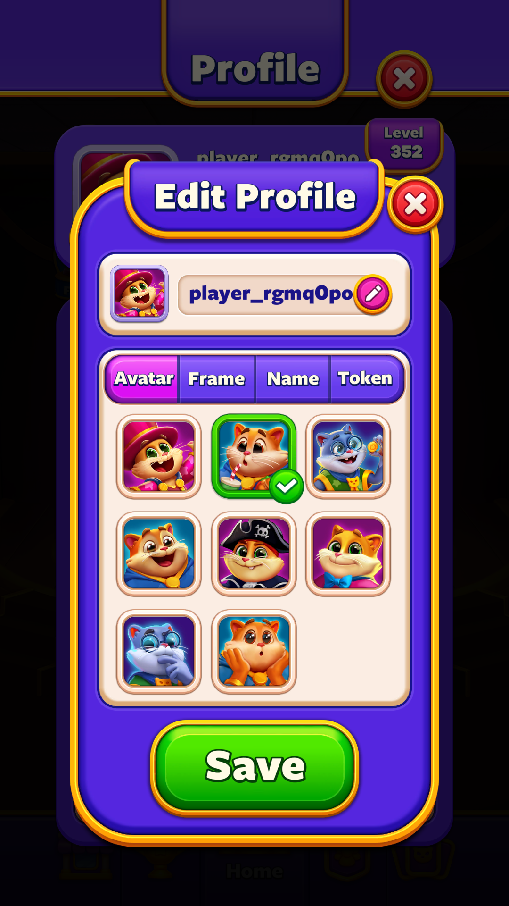
Playtest Avatar giữa hàng đầu có checkmark chọn tạm, trong khi preview header vẫn dùng avatar gốc.16/11/2026 · app 0.0.3129 · fixture offlineXem case 
Playtest Quay lại Profile với tên và avatar ban đầu sau khi đóng editor.15/11/2026 · app 0.0.3129 · fixture offlineXem case · Xem case - 04
Gắn token bộ sưu tập lên hồ sơ
Người chơi và clientXem token khóa WonderlandBadge.
Điều kiện / luật: Equip xám; chạm hiện Token is not equippable.
Kết quả theo đặc tả: Quyền sở hữu chặn equip, không có nhận token hoặc Save thành công.
15/11/2026 · Frame, Name style và Token bị khóa16/11/2026 · Token Wonderland bị khóa: preview và Equip bị từ chốiNguồn: Profile.json · /use_cases/4 · Profile.json · Profile.json · review_cases_20261116_round2.json · cross_feature_evidence_context.json
Playtest Preview Wonderland Badge có Equip xám; chưa đủ quyền trang bị.16/11/2026 · app 0.0.3129 · fixture offlineXem case 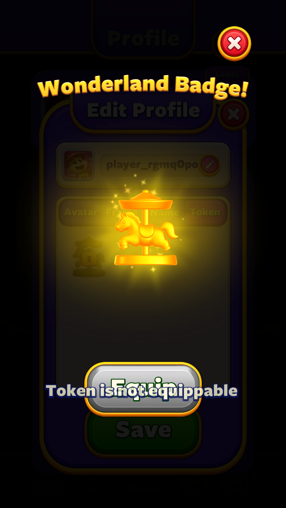
Playtest Chạm Equip ở token khóa hiện Token is not equippable; không có equip thành công.16/11/2026 · app 0.0.3129 · fixture offlineXem case


Quy tắc cần nắm
| Quy tắc | Hành vi theo nguồn | Căn cứ |
|---|---|---|
| Không gọi chọn là lưu | Avatar chọn tạm và tên abc chưa được gửi lên server. | Nguồn: Profile.json · Profile.json · review_cases_20261116_round2.json · cross_feature_evidence_context.json |
| Bốn nhóm trang trí | Avatar, Token, Frame và Name là các catalog khác nhau; một token khóa không phủ frame/name style. | Nguồn: Profile.json · Profile.json · review_cases_20261116_round2.json · cross_feature_evidence_context.json |
| Cache ảnh có vòng đời | Nguồn có expiration5 phiên cho profile sprite cache; không áp vào mọi dữ liệu hồ sơ. | Nguồn: Profile.json · Profile.json · review_cases_20261116_round2.json · cross_feature_evidence_context.json |
Số liệu & phần thưởng
Phần thưởng
VẬT PHẨM HỒ SƠ VÀ NGUỒN NHẬN
| Mốc | Điều kiện | Phần thưởng |
|---|---|---|
| Bộ sưu tập 1 | Hoàn thành bộ sưu tập 1 | 1 token collection_1_token hoặc bản vàng collection_1_token_gold |
| Bộ sưu tập 2 | Hoàn thành bộ sưu tập 2 | 1 token collection_2_token hoặc bản vàng collection_2_token_gold |
| Bộ sưu tập 3 | Hoàn thành bộ sưu tập 3 | 1 token collection_3_token hoặc bản vàng collection_3_token_gold |
| Bộ sưu tập 4 | Hoàn thành bộ sưu tập 4 | 1 token collection_4_token hoặc bản vàng collection_4_token_gold |
| Bộ sưu tập 5 | Hoàn thành bộ sưu tập 5 | 1 token collection_5_token hoặc bản vàng collection_5_token_gold |
| Magic Pass | Kích hoạt Magic Pass | 1 khung viền magic_pass_frame 1 kiểu chữ magic_pass_name_style (có hạn theo ExpireTime) |
BỘ ẢNH ĐẠI DIỆN (ProfileSpriteConfig.asset)
| Nhóm | Id | Ghi chú |
|---|---|---|
| Avatar dựng sẵn | "1", "2", "3", "4", "5", "6", "7", "8" | 8 ảnh đóng gói trong asset |
| Mặc định | "1" | DefaultSprite |
| "fb" | FacebookSprite — ảnh tải từ Facebook | |
| Facebook dự phòng | (Id rỗng) | FacebookDefaultSprite |
| Khung viền | "" (mặc định), "magic_pass_frame" | ProfileSpriteConfig.frames |
| Kiểu chữ tên | "" (mặc định), "magic_pass_name_style" | ProfileSpriteConfig.nameStyles |
NGUỒN MỞ POPUP HỒ SƠ (enum ShowProfileCommandSource)
| Mã | Nguồn | Ghi chú |
|---|---|---|
| 1 | TeamsInfo | Thông tin đội |
| 2 | TeamsChat | Chat đội |
| 3 | PlayerLeaderboard | Bảng xếp hạng người chơi |
| 4 | WeeklyLeaderboard | Bảng xếp hạng tuần |
| 5 | ChampionsLeagueLeaderboard | Champions League |
| 6 | Jetpack | Jetpack Race |
| 7 | DuckFestivalLeaderboard | Duck Festival |
| 8 | TeamArena | Team Arena |
| 9 | TeamQuestLeaderboard | Team Quest |
| 10 | FriendsLeaderboard | Bảng xếp hạng bạn bè |
Phần thưởng theo code
| Ngữ cảnh | Phần thưởng | Evidence |
|---|---|---|
| Hoàn thành bộ sưu tập | Token hồ sơ (collection_N_token / collection_N_token_gold) | PlayerService.AddProfileToken; ProfileTokenEquipPopUp |
| Kích hoạt Magic Pass | Frame 'magic_pass_frame' và name style 'magic_pass_name_style' (có hạn theo ExpireTime) | PlayerService.AddProfileFrame; PlayerService.AddProfileNameStyle; localize 'MagicPassActivationName' |
Số liệu chính
| Chỉ số | Giá trị | Nguồn |
|---|---|---|
| Số avatar dựng sẵn | 8 (Id "1"–"8") | ProfileSpriteConfig.images |
| Id ảnh mặc định | "1" | ProfileSpriteConfig.DefaultSprite |
| Id ảnh Facebook | "fb" | ProfileSpriteConfig.FacebookSprite |
| Số token bộ sưu tập | 10 (5 bộ × bản thường + bản gold) | ProfileSpriteConfig.tokens |
| Số khung viền | 2 (mặc định và magic_pass_frame) | ProfileSpriteConfig.frames |
| Số kiểu chữ tên | 2 (mặc định và magic_pass_name_style) | ProfileSpriteConfig.nameStyles |
| Độ dài tên tối thiểu | 3 ký tự hợp lệ | ProfileNameWarning |
| Số phiên giữ file ảnh cache | 5 | ProfileSpritePersistenceService.CacheExpirationSessionCount |
| Giãn cách ghi catalog | 3 giây | ProfileSpritePersistenceService.CatalogSaveIntervalSeconds |
| Thư mục cache ảnh | "ProfileSpriteCache" | ProfileSpritePersistenceService.CacheFolder |
| Khoá PlayerPrefs ảnh Facebook | "facebook_profile_photo" | SocialProfilePhotoManager.FACEBOOK_PROFILE_PHOTO_KEY |
| Số nguồn mở popup hồ sơ người khác | 10 | ShowProfileCommandSource |
| Số tab trong EditProfilePopup | 4 (Avatar, Token, Frame, Name) | EditProfilePopup |
| Endpoint xem hồ sơ người khác | /v2/get-profile | BackendEnvironmentConfig.asset |
| Endpoint đổi hồ sơ của mình | /v1/change-profile | BackendEnvironmentConfig.asset |
| URL ảnh Facebook | /picture?type=large&access_token= | FacebookLoginService |
| Số trường của UserProfileModel | 23 trường (UserPublicId … CanShowAddFriend) | Profile.Commands.UserProfileModel |
| Số nhãn thống kê trong ProfilePopup | 13 nhãn (ProfilePopupFirstTry … ProfilePopupBoatRushWins) | Profile UC-09 |
| Sự kiện analytics mở hồ sơ | profile_{0} theo ShowProfileCommandSource | ShowUserProfileCommand |
| Bật luồng bắt buộc đặt tên | (server) IsForcedNamePopupEnabled | FirebaseRemoteConfigResolver |
Các quyết định trong luồng
| Tình huống | Cách xử lý theo nguồn | Căn cứ |
|---|---|---|
| Nút Continue xanh chứng minh gì? | Chỉ validation cục bộ ở input đó; backend, profanity và Unicode chưa được kiểm. | Case0/2/3 ký tự ASCII và cancel. Nguồn: Profile.json · Profile.json · review_cases_20261116_round2.json · cross_feature_evidence_context.json |
| Vì sao token có preview nhưng không equip? | Cho xem đích sưu tầm trong khi quyền sử dụng vẫn khóa. | WonderlandBadge preview và lỗi equip mới. Nguồn: Profile.json · Profile.json · review_cases_20261116_round2.json · cross_feature_evidence_context.json |
Nhánh lỗi và phục hồi
| Điều kiện | Hành vi mong đợi | Phạm vi đã kiểm |
|---|---|---|
| Offline khi chỉnh | Không báo Save thành công khi không có điều kiện mạng. | 15/11 Save avatar hiện No Internet;16/11 chỉ cancel. |
| Tải avatar remote lỗi | Provider có cooldown/retry và cache riêng. | Source, chưa có response remote mới. |
Nhận định & vận dụng
Phân biệt preview, validation, entitlement và commit trong mỗi case.
Bốn điều kiện có thể cho kết quả khác nhau.
Đừng để khoe thành tích vượt qua tính toàn vẹn save.
Offline/cancel phải giữ hồ sơ gốc.
Ảnh chụp bổ sung & nguồn bằng chứng
Mô tả trạng thái hoặc bước nhìn thấy trong ảnh và ngữ cảnh case; không nâng preview, cache hay lỗi thành grant, online hoặc full UC pass.
Không coi ảnh lịch sử hoặc ảnh ép bật bằng fixture là trạng thái production hiện tại.
Những ảnh còn lại của tính năng được giữ mở sẵn bên dưới. Các ảnh đã đặt ở phần tóm tắt hoặc bước liên quan không lặp lại trong gallery này.


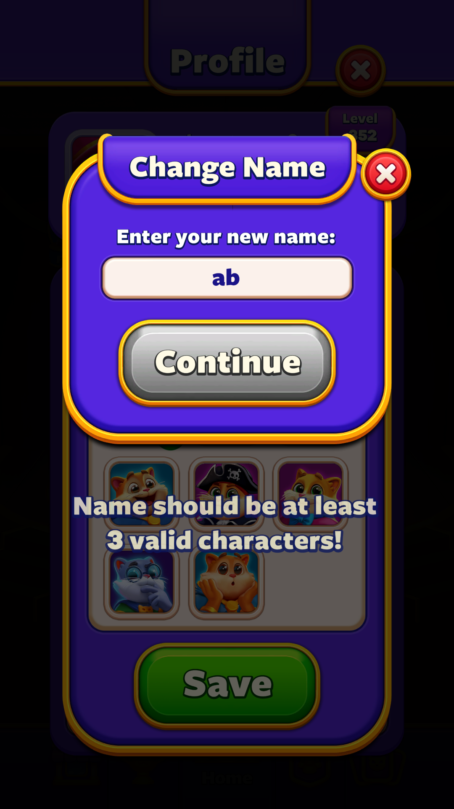

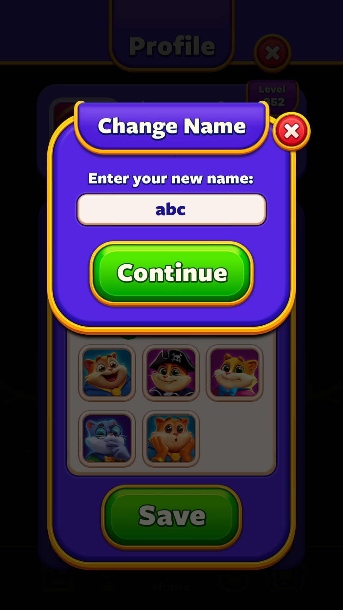


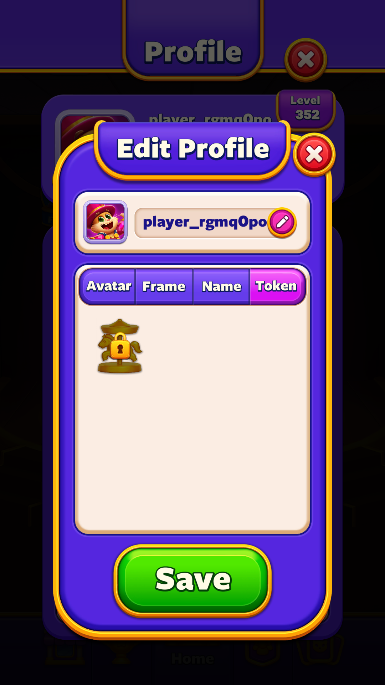


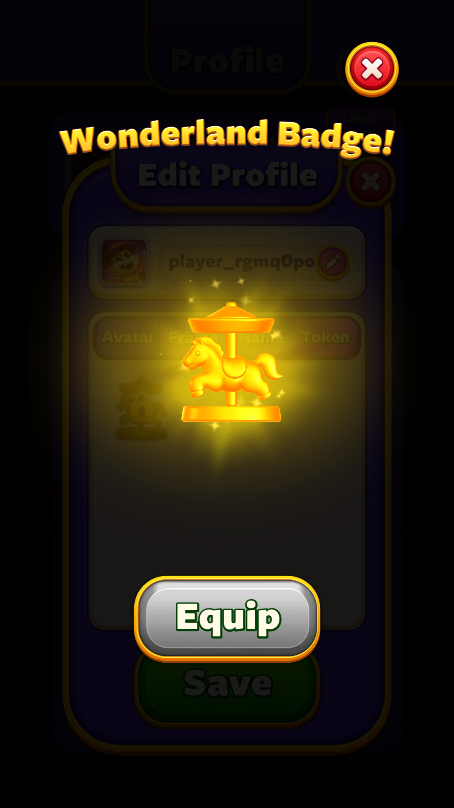


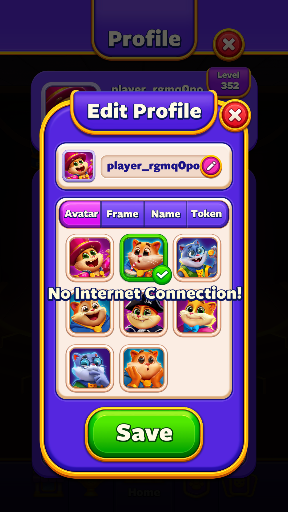

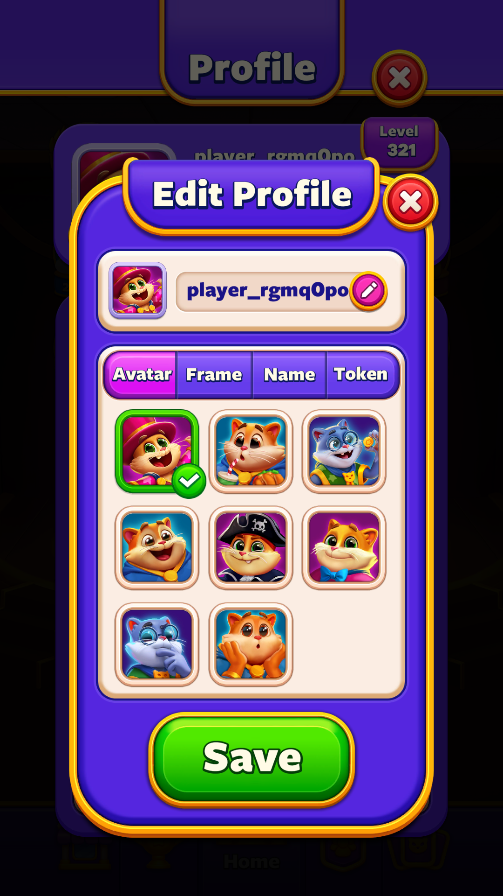

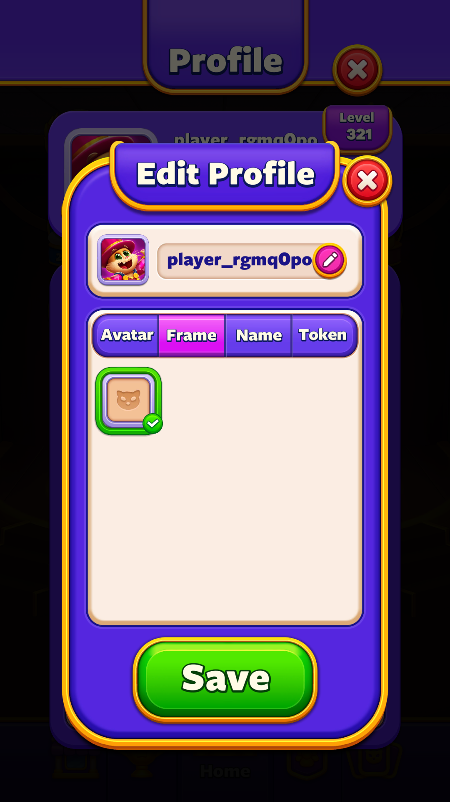

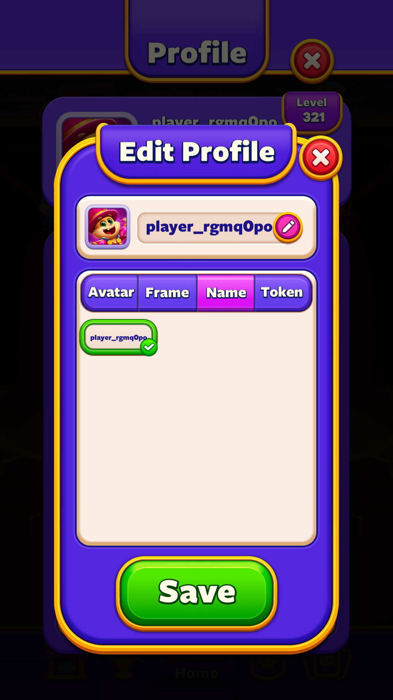

Case đầy đủ: expected, actual và ledger · Ảnh lịch sử và tài nguyên gốc
Mở khóa & điểm vào
Có từ đầu game. Luồng bắt buộc nhập tên bật bằng remote config 'IsForcedNamePopupEnabled' (FirebaseRemoteConfigResolver) và được thực thi bởi TryShowForceNameChangeCommand (thuộc IHomeWelcomingSequenceCommand / IReturnToHomeSequenceCommand) với thuộc tính ShouldShowForce. Frame và name style chỉ mở khi người chơi sở hữu (PlayerService.GetProfileFrames / GetProfileNameStyles, ví dụ 'magic_pass_frame' từ Magic Pass).
Điểm vào:
- Nút hồ sơ ở Home (ProfileButton, OpenEditProfilePopupButton)
- Popup chỉnh hồ sơ EditProfilePopup (localize 'EditProfilePopupTitle' = Edit Profile)
- Popup nhập tên ProfileEnterNamePopup (bắt buộc hoặc tự nguyện)
- Bấm vào avatar người chơi khác (ShowUserProfileButton → ShowUserProfileCommand)
- Popup hồ sơ người khác OtherUserProfilePopup từ 10 nguồn (ShowProfileCommandSource)
- Popup gắn token ProfileTokenEquipPopUp khi hoàn thành bộ sưu tập
Cách hoạt động
- ProfileSpriteService nhận ProfileSpriteConfig (ScriptableObject) chứa danh sách avatar dựng sẵn, token, frames và nameStyles.
- GetActiveProfileId() / GetActiveSprite() đọc PlayerService.GetProfileInfo() trả ProfileInfo{imageId, userName, tokenId, frameInfo, nameStyleInfo}.
- Nếu remote config IsForcedNamePopupEnabled bật và ShouldShowForce đúng, TryShowForceNameChangeCommand chèn popup nhập tên vào chuỗi về Home.
- Người chơi nhập tên trong ProfileEnterNamePopup, hai chế độ: nhập lần đầu ('Profile Enter Name') và đổi tên ('Profile Change Name').
- Nếu người chơi liên kết Facebook, TryLoadFacebookPhoto() tải ảnh qua FacebookLoginService và SocialProfilePhotoManager.SaveProfilePhoto(texture) lưu vào PlayerPrefs 'facebook_profile_photo'.
- Trong EditProfilePopup, bốn container tab cho chọn avatar (8 id), token (10 id), frame (2 mục) và name style (2 mục).
- SaveProfileButtonHandler.OnButtonClick() kiểm tra IsNameInputValid(name) rồi lưu ProfileInfo qua PlayerService.SetProfileInfo.
- Dữ liệu đẩy lên server bằng SyncService (PlayerService.SerializeModelForSync), endpoint /v1/change-profile.
- Hoàn thành bộ sưu tập cấp token qua PlayerService.AddProfileToken(tokenId) và mở ProfileTokenEquipPopUp để gắn ngay.
- Kích hoạt Magic Pass cấp frame 'magic_pass_frame' và name style 'magic_pass_name_style' có ExpireTime; hết hạn thì dùng ProfileFrameInfo.Default.
- Xem hồ sơ người khác: ShowUserProfileCommand(userPublicId, source, canShowAddFriend).ExecuteAsync() → FetchUserProfile() gửi GetUserProfileRequestModel{UserId} tới /v2/get-profile.
- Server trả GetUserProfileResponse (FlatBuffers) thành UserProfileModel với đầy đủ thống kê, rồi ShowOtherUserProfilePopup(profile) hiện lên.
- Avatar người khác đi qua ProfileSpriteCacheService.RequestCacheSprite(imageId, imageUrl, publicId); RequestCacheSprites(List) nạp hàng loạt cho leaderboard.
- AssignProviderTypeTo() chọn nguồn: ProfileSpritePersistenceProvider đọc file cache, hoặc ProfileSpriteHttpProvider tải HTTP với cooldown tăng dần khi lỗi.
- Thành công thì OnProfileSpriteLoadSuccess() ghi vào _profileSpriteDictionary và lưu file; thất bại thì OnProfileSpriteLoadFail() đẩy sang danh sách retry, xử lý dần trong FrameUpdate().
- ProfileSpritePersistenceService quản lý thư mục 'ProfileSpriteCache' và file catalog; mỗi mục có ExpirationSession, xoá sau 5 phiên.
Luồng chi tiết theo code
ProfileSpriteService nhận ProfileSpriteConfig (ScriptableObject) chứa danh sách avatar dựng sẵn, token, frames và nameStyles. GetActiveProfileId()/GetActiveSprite() đọc PlayerService.GetProfileInfo() (ProfileInfo{imageId, userName, tokenId, frameInfo, nameStyleInfo}). Nếu người chơi liên kết Facebook, TryLoadFacebookPhoto() tải ảnh qua FacebookLoginService (URL dạng '/picture?type=large&access_token=') và SocialProfilePhotoManager.SaveProfilePhoto(texture) lưu vào PlayerPrefs khoá 'facebook_profile_photo'; ảnh này ứng với ProfileSprite id 'fb'. Người chơi chỉnh hồ sơ trong EditProfilePopup gồm 4 tab: Avatar, Token, Frame, Name; SaveProfileButtonHandler.OnButtonClick() kiểm tra IsNameInputValid(name) (dùng khoá cảnh báo 'ProfileNameWarning' và 'ProfilePictureWarning') rồi lưu ProfileInfo qua PlayerService.SetProfileInfo và đẩy lên server bằng SyncService. Đổi tên riêng lẻ dùng ProfileEnterNamePopup với hai chế độ: nhập lần đầu ('Profile Enter Name', 'Profile What is your name') và đổi tên ('Profile Change Name', 'Profile Enter your new name'); khi _isForceEnter thì nút đóng bị ẩn (UpdateCloseButtonVisibility) và cả hai popup đều kiểm tra HasInternetConnection(). Xem hồ sơ người khác: ShowUserProfileCommand(userPublicId, source, canShowAddFriend).ExecuteAsync() → FetchUserProfile() gửi GetUserProfileRequestModel{UserId} (schema magicsort.schemas.v1.profile.GetUserProfileResponse) trả UserProfileModel với đầy đủ thống kê, rồi ShowOtherUserProfilePopup(profile). Avatar của người khác đi qua ProfileSpriteCacheService.RequestCacheSprite(imageId, imageUrl, publicId): mỗi yêu cầu là một ProfileSpriteCacheRequest, AssignProviderTypeTo() chọn nguồn (ProfileSpritePersistenceProvider đọc file cache, hoặc ProfileSpriteHttpProvider tải HTTP với cooldown tăng dần khi lỗi); thành công thì OnProfileSpriteLoadSuccess() ghi vào _profileSpriteDictionary và lưu file; thất bại thì OnProfileSpriteLoadFail() đẩy sang danh sách retry. ProfileSpritePersistenceService quản lý thư mục 'ProfileSpriteCache' + file catalog, mỗi mục có ExpirationSession và bị xoá sau CacheExpirationSessionCount = 5 phiên.
Ảnh chụp màn hình (5)
Ảnh gốc và tài nguyên trong hồ sơ nền; không phải ảnh playtest mới ngày 16/11.
5 ảnh chụp trong game (LDPlayer, bản 0.0.3129, tài khoản thử level 321 → 351 (07/10/2026)). Bấm ảnh để phóng to; ảnh chụp lịch sử mở PNG gốc. Nhãn UC dẫn tới use case tương ứng.
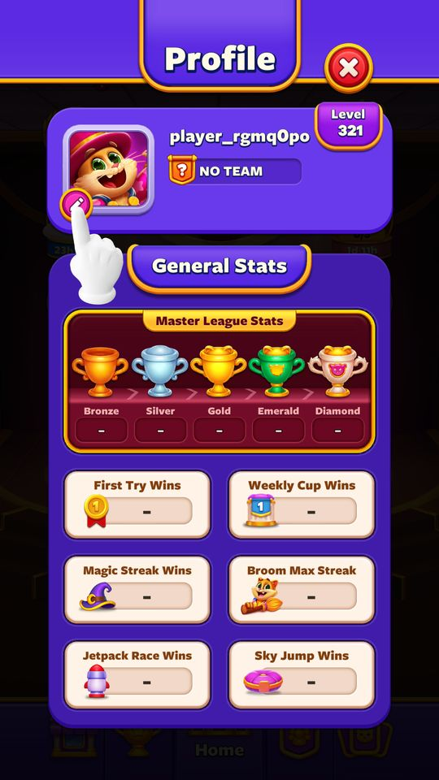
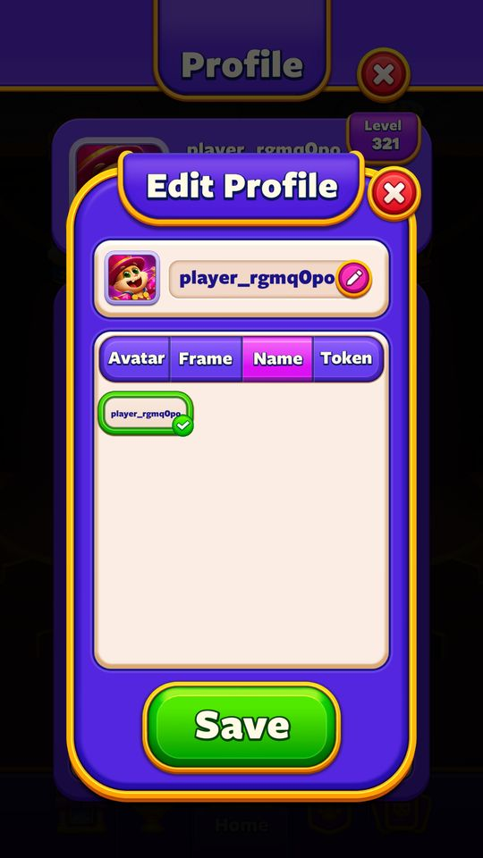
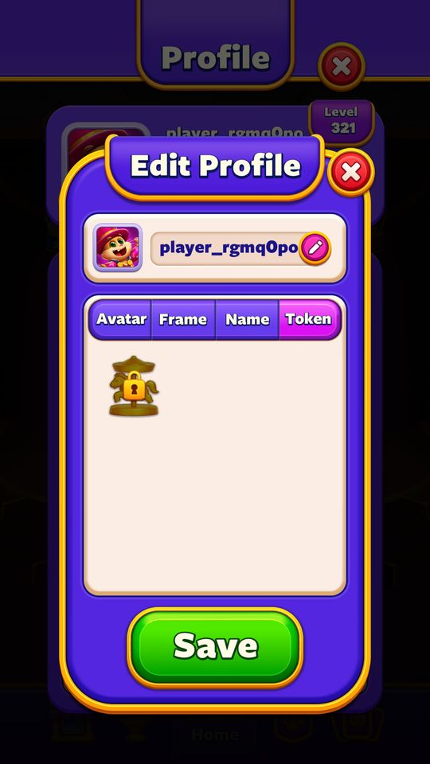
Use case (17)
Đặc tả UC mô tả hành vi theo nguồn. Kết quả mong đợi không phải kết quả đã chạy; case quan sát được liên kết riêng ở từng UC.
Bấm vào từng use case để mở. Mở/đóng tất cả
UC-01 Bắt buộc đặt tên lần đầu
Chưa có case trực tiếp trong hai lượt review 15–16/11.
Các bước- TryShowForceNameChangeCommand.Initialize(cancellationToken) rồi ExecuteAsync()
- ShouldShowForce = true → Open() mở ProfileEnterNamePopup với _isForceEnter = true, _isFirstForce = true
- Nút đóng bị ẩn (UpdateCloseButtonVisibility), người chơi buộc nhập tên hợp lệ
- IsNameInputValid(name) kiểm tra độ dài và từ xấu
- Lưu qua PlayerService.UpdateUserName(userName) + SetProfileInfo
- IsShowed = true để không lặp lại
| Actor | System |
|---|---|
| Trigger | Về Home trong chuỗi welcoming/return |
| Điều kiện | Chưa có userName và cờ IsForcedNamePopupEnabled bật |
| Kết quả mong đợi theo nguồn | Người chơi có tên hiển thị trước khi vào các tính năng xã hội |
| Quy tắc / số liệu | Tên phải >= 3 ký tự hợp lệ ('ProfileNameWarning' = "Name should be at least 3 valid characters!"). Lệnh khai báo IsSkippable() và ShouldTerminateTheFlow() để phối hợp với chuỗi popup Home |
| Bằng chứng đặc tả | TryShowForceNameChangeCommand.ExecuteAsync; TryShowForceNameChangeCommand.Open; TryShowForceNameChangeCommand.get_ShouldShowForce; ProfileEnterNamePopup.UpdateCloseButtonVisibility; PlayerService.UpdateUserName |
UC-02 Đổi tên hiển thị
Có bằng chứng một số nhánh; chưa full UC pass.
15/11/2026 · Tên hai ký tự bị chặn, hủy giữ tên cũ16/11/2026 · Đổi tên: blank/ab bị từ chối, abc mới là draftCác bước- ProfileEnterNamePopup mở ở chế độ đổi tên ('Profile Change Name', 'Profile Enter your new name')
- UpdateContinueButtonVisual(name) đổi giữa _greenButton và _grayButton theo tính hợp lệ
- IsNameInputValid(name) lọc từ xấu bằng BadWordManager/BadWordFilter
- Lưu và đồng bộ; nếu server từ chối thì OnProfileInfoSaveFailed() đặt _savingNameFailed = true
| Actor | Player |
|---|---|
| Trigger | Bấm Edit Name trong EditProfilePopup (EditNameProfileButton) |
| Điều kiện | Có kết nối mạng |
| Kết quả mong đợi theo nguồn | Tên mới hiển thị ở mọi nơi (UserProfileView.SetUserName) |
| Quy tắc / số liệu | HasInternetConnection() chặn khi offline. Bộ lọc BadWordFilter còn xử lý leetspeak (replaceLeetAdvancedToText) nên né bằng ký tự thay thế không hiệu quả |
| Bằng chứng đặc tả | ProfileEnterNamePopup.IsNameInputValid; ProfileEnterNamePopup.UpdateContinueButtonVisual; ProfileEnterNamePopup.OnProfileInfoSaveFailed; ProfileEnterNamePopup.HasInternetConnection; BadWordManager |
UC-03 Chọn ảnh đại diện dựng sẵn
Có bằng chứng một số nhánh; chưa full UC pass.
15/11/2026 · Chọn avatar và Save khi offline16/11/2026 · Chọn avatar khác trong draft rồi đóng EditCác bước- EditProfilePopup.OnAvatarTabSelected() → ActivateTab(_avatarTabParent)
- ProfileSpriteSelectionContainer liệt kê ProfileSpriteService.GetAllSprites() (ProfileSpriteConfig.images)
- Chọn → OnProfileSpriteSelected(id) và SetSaveButtonActive(true)
- SaveProfileButtonHandler.OnButtonClick() lưu ProfileInfo.imageId
| Actor | Player |
|---|---|
| Trigger | Tab Avatar trong EditProfilePopup |
| Điều kiện | - |
| Kết quả mong đợi theo nguồn | Avatar mới áp dụng cho mọi màn hình xã hội |
| Quy tắc / số liệu | Asset ProfileSpriteConfig.asset có 8 avatar id "1"–"8"; DefaultSprite = id "1"; chưa chọn ảnh → cảnh báo 'ProfilePictureWarning' |
| Bằng chứng đặc tả | EditProfilePopup.OnAvatarTabSelected; EditProfilePopup.OnProfileSpriteSelected; ProfileSpriteService.GetAllSprites; SaveProfileButtonHandler.OnButtonClick; ProfileSpriteConfig.images |
UC-04 Dùng ảnh Facebook làm avatar
Chưa có case trực tiếp trong hai lượt review 15–16/11.
Các bước- ProfileSpriteService.TryLoadFacebookPhoto() tải ảnh từ Graph API ('/picture?type=large&access_token=')
- SocialProfilePhotoManager.SaveProfilePhoto(texture) lưu vào PlayerPrefs khoá 'facebook_profile_photo'
- LoadProfilePhoto()/ConvertTextureToSprite dựng Sprite
- GetFacebookProfile() trả ProfileSprite id "fb" (FacebookSpriteId)
| Actor | Player |
|---|---|
| Trigger | Đăng nhập Facebook (ProfileFacebookLoginButton) |
| Điều kiện | FacebookLoginService đăng nhập thành công |
| Kết quả mong đợi theo nguồn | Avatar là ảnh Facebook thật; nếu tải hỏng dùng FacebookDefaultSprite |
| Quy tắc / số liệu | DeleteProfilePhoto() xoá khi đăng xuất Facebook. ProfileSpriteConfig có riêng FacebookSprite (id 'fb') và FacebookDefaultSprite (id rỗng) |
| Bằng chứng đặc tả | ProfileSpriteService.TryLoadFacebookPhoto; ProfileSpriteService.LoadProfilePhoto; ProfileSpriteService.DeleteProfilePhoto; SocialProfilePhotoManager.SaveProfilePhoto; SocialProfilePhotoManager.FACEBOOK_PROFILE_PHOTO_KEY |
UC-05 Gắn token bộ sưu tập lên hồ sơ
Có bằng chứng một số nhánh; chưa full UC pass.
15/11/2026 · Frame, Name style và Token bị khóa16/11/2026 · Token Wonderland bị khóa: preview và Equip bị từ chốiCác bước- EditProfilePopup.OnTokenTabSelected() → ProfileTokenSelectionContainer liệt kê ProfileSpriteService.GetAllTokens()
- Chọn token → lưu ProfileInfo.tokenId
- UserProfileView.SetTokenImage(token) hiển thị; ProfileSpriteConfig.InstantiateAndGetTokenUIPart(tokenId, parent) dựng phần UI động
| Actor | Player |
|---|---|
| Trigger | Tab Token trong EditProfilePopup hoặc ProfileTokenEquipPopUp sau khi hoàn thành bộ sưu tập |
| Điều kiện | PlayerService.GetProfileTokens() có token |
| Kết quả mong đợi theo nguồn | Huy hiệu bộ sưu tập xuất hiện cạnh tên người chơi |
| Quy tắc / số liệu | Asset có 10 token: collection_1_token … collection_5_token và bản _gold tương ứng. PlayerService.AddProfileToken(tokenId) cấp khi hoàn thành bộ sưu tập, ClearProfileTokens() dọn khi cần |
| Bằng chứng đặc tả | EditProfilePopup.OnTokenTabSelected; ProfileSpriteService.GetAllTokens; ProfileSpriteConfig.InstantiateAndGetTokenUIPart; PlayerService.AddProfileToken; UserProfileView.SetTokenImage |
UC-06 Chọn khung viền (frame)
Có bằng chứng một số nhánh; chưa full UC pass.
15/11/2026 · Frame, Name style và Token bị khóaCác bước- EditProfilePopup.OnFrameTabSelected() → ProfileFrameSelectionContainer liệt kê ProfileSpriteService.GetAllFrames()
- Kiểm tra ProfileFrameInfo.IsValid và IsTimeBased/ExpireTime
- Lưu ProfileInfo.frameInfo; UserProfileView.SetFrameView(frameId) render qua ProfileFrameView
| Actor | Player |
|---|---|
| Trigger | Tab Frame trong EditProfilePopup |
| Điều kiện | PlayerService.GetProfileFrames() có ProfileFrameInfo hợp lệ |
| Kết quả mong đợi theo nguồn | Khung viền quanh avatar ở mọi nơi |
| Quy tắc / số liệu | Asset ProfileSpriteConfig.frames = ["" (mặc định), "magic_pass_frame"]. Frame Magic Pass có hạn (ExpireTime), hết hạn thì ProfileFrameInfo.Default được dùng |
| Bằng chứng đặc tả | EditProfilePopup.OnFrameTabSelected; ProfileSpriteService.GetAllFrames; ProfileSpriteService.GetActiveFrameInfo; ProfileFrameInfo.IsValid; ProfileFrameInfo.IsTimeBased; ProfileSpriteConfig.frames |
UC-07 Chọn kiểu chữ tên (name style)
Có bằng chứng một số nhánh; chưa full UC pass.
15/11/2026 · Frame, Name style và Token bị khóaCác bước- EditProfilePopup.OnNameTabSelected() → ProfileNameStyleSelectionContainer liệt kê ProfileSpriteService.GetAllNameStyles()
- Lưu ProfileInfo.nameStyleInfo
- UserProfileView.SetNameStyleView(nameStyleId, userName) render qua ProfileNameStyleView
| Actor | Player |
|---|---|
| Trigger | Tab Name trong EditProfilePopup |
| Điều kiện | PlayerService.GetProfileNameStyles() có ProfileNameStyleInfo hợp lệ |
| Kết quả mong đợi theo nguồn | Tên hiển thị với hiệu ứng riêng |
| Quy tắc / số liệu | Asset ProfileSpriteConfig.nameStyles = ["" (mặc định), "magic_pass_name_style"]; localize 'MagicPassTooltipActivateName' quảng bá kiểu chữ này |
| Bằng chứng đặc tả | EditProfilePopup.OnNameTabSelected; ProfileSpriteService.GetAllNameStyles; ProfileSpriteService.GetActiveNameStyleInfo; ProfileNameStyleInfo; ProfileSpriteConfig.nameStyles |
UC-08 Xem hồ sơ người chơi khác
Chưa có case trực tiếp trong hai lượt review 15–16/11.
Các bước- ShowUserProfileButton → ShowUserProfileCommand(userPublicId, source, canShowAddFriend)
- ExecuteAsync() → FetchUserProfile() gửi GetUserProfileRequestModel{UserId}
- Nhận UserProfileModel rồi ShowOtherUserProfilePopup(profile)
- OtherUserProfilePopup.UpdateViews() đổ Level, thống kê thắng, tên/badge đội (TeamsBadgeConfig, _noTeamBadgeSprite khi không có đội)
- FriendProfileController hiện nút Add/Accept/Remove nếu CanShowAddFriend
| Actor | Player |
|---|---|
| Trigger | Bấm vào avatar/tên trong chat đội, bảng xếp hạng, danh sách bạn |
| Điều kiện | Có publicId |
| Kết quả mong đợi theo nguồn | Popup hồ sơ đầy đủ, có lối kết bạn và nút xem đội (_teamsButton) |
| Quy tắc / số liệu | ShowProfileCommandSource: TeamsInfo=1, TeamsChat=2, PlayerLeaderboard=3, WeeklyLeaderboard=4, ChampionsLeagueLeaderboard=5, Jetpack=6, DuckFestivalLeaderboard=7, TeamArena=8, TeamQuestLeaderboard=9, FriendsLeaderboard=10 |
| Bằng chứng đặc tả | ShowUserProfileCommand.ExecuteAsync; ShowUserProfileCommand.FetchUserProfile; ShowUserProfileCommand.ShowOtherUserProfilePopup; OtherUserProfilePopup.UpdateViews; ShowProfileCommandSource |
UC-09 Xem thống kê thành tích của mình
Có bằng chứng một số nhánh; chưa full UC pass.
15/11/2026 · Thống kê Profile sau level 351Các bước- ProfilePopup.Show(PopUpArguments) chạy animation theo ProfilePopupAnimationConfig
- ProfilePopupGeneralStatsView đổ các chỉ số (localize 'ProfilePopupHeader' = General Stats)
- ProfilePopupChampionsLeague hiện thống kê giải Master League ('ChampionsLeagueProfilePopupHeader')
| Actor | Player |
|---|---|
| Trigger | Mở ProfilePopup |
| Điều kiện | - |
| Kết quả mong đợi theo nguồn | Người chơi xem được số trận thắng theo từng sự kiện |
| Quy tắc / số liệu | Nhãn: 'ProfilePopupFirstTry', 'ProfilePopupWeeklyCup', 'ProfilePopupMagicStreak', 'ProfilePopupBroomStreak', 'ProfilePopupJetpackRace', 'ProfilePopupSkyJump', 'ProfilePopupDuckFest', 'ProfilePopupTop3Wins', 'ProfilePopupHelpsMade', 'ProfilePopupCollectionFinished', 'ProfilePopupCurrentLeague', 'ProfilePopupMergeBakeryWins', 'ProfilePopupBoatRushWins' |
| Bằng chứng đặc tả | ProfilePopup.Show; ProfilePopupGeneralStatsView; ProfilePopupChampionsLeague; UserProfileModel |
UC-10 Tải và cache avatar của người chơi khác
Chưa có case trực tiếp trong hai lượt review 15–16/11.
Các bước- ProfileSpriteCacheService.RequestCacheSprite(imageId, imageUrl, publicId) tạo ProfileSpriteCacheRequest, chống trùng bằng _profileSpriteCacheRequestsPublicIds
- AssignProviderTypeTo(cacheRequest) chọn ProfileSpritePersistenceProvider (nếu IsCacheExists) hoặc ProfileSpriteHttpProvider
- ProfileSpriteHttpProvider.LoadImageDataHttpAsync(url) tải qua HttpProxy
- OnProfileSpriteLoadSuccess(request, texture, data) đưa Sprite vào _profileSpriteDictionary và ProfileSpritePersistenceService.Add(request, data)
- GetSprite(profileId, pictureId) trả sprite cho UI
| Actor | System |
|---|---|
| Trigger | Render danh sách có avatar từ URL |
| Điều kiện | Có imageUrl |
| Kết quả mong đợi theo nguồn | Ảnh hiện nhanh ở lần sau, tiết kiệm băng thông |
| Quy tắc / số liệu | RequestCacheSprites(List<...>) nạp hàng loạt cho leaderboard; _isRequestListChanged và FrameUpdate() xử lý theo khung hình để không giật |
| Bằng chứng đặc tả | ProfileSpriteCacheService.RequestCacheSprite; ProfileSpriteCacheService.AssignProviderTypeTo; ProfileSpriteCacheService.OnProfileSpriteLoadSuccess; ProfileSpriteCacheService.GetSprite; ProfileSpriteHttpProvider.LoadImageDataHttpAsync |
UC-11 Tải avatar thất bại và thử lại có cooldown
Chưa có case trực tiếp trong hai lượt review 15–16/11.
Các bước- ProfileSpriteHttpProvider đặt _isAnyRequestFailed = true và tăng _coolDownDurationAsSeconds tới trần _maxCoolDownDurationAsSeconds, đặt _coolDownEndTime
- ProfileSpriteCacheService.OnProfileSpriteLoadFail(request) tăng request.Retries và đẩy vào _retryProfileSpriteCacheRequests
- CheckProfileSpriteCacheRequests() thử lại sau khi hết cooldown
| Actor | System |
|---|---|
| Trigger | HTTP lỗi hoặc URL hỏng |
| Điều kiện | - |
| Kết quả mong đợi theo nguồn | Không spam server khi mạng kém; UI dùng ảnh mặc định trong lúc chờ |
| Quy tắc / số liệu | _coolDownDurationBetweenDownloadAsSeconds giãn cách giữa hai lần tải liên tiếp |
| Bằng chứng đặc tả | ProfileSpriteCacheService.OnProfileSpriteLoadFail; ProfileSpriteCacheService.CheckProfileSpriteCacheRequests; ProfileSpriteHttpProvider (các trường cooldown); ProfileSpriteCacheRequest.Retries |
UC-12 Quản lý cache ảnh trên đĩa và dọn theo phiên
Chưa có case trực tiếp trong hai lượt review 15–16/11.
Các bước- ProfileSpritePersistenceService.InitializeFileSystem() tạo thư mục 'ProfileSpriteCache' và file 'catalog'
- LoadCatalog() đọc từng dòng thành ProfileSpritePersistenceCatalogItem{ImageUrl, ExpirationSession}
- _activeSessionCount tăng mỗi phiên; mục quá GetCacheExpirationSessionCount() = 5 phiên bị DeleteItemsFromCatalog + DeleteFiles
- RequestSaveCatalog() gom yêu cầu lưu, TrySaveCatalog() ghi tối đa mỗi CatalogSaveIntervalSeconds = 3 giây, ghi qua file tạm rồi đổi tên (WriteFile(tempPath, filePath, data))
| Actor | System |
|---|---|
| Trigger | Khởi động app / định kỳ |
| Điều kiện | - |
| Kết quả mong đợi theo nguồn | Cache ổn định, không phình vô hạn, an toàn khi app bị kill giữa lúc ghi |
| Quy tắc / số liệu | CacheExpirationSessionCount = 5; CatalogSaveIntervalSeconds = 3; CacheFolder = "ProfileSpriteCache"; đường dẫn file dạng '{cacheFolder}/{0}' |
| Bằng chứng đặc tả | ProfileSpritePersistenceService.InitializeFileSystem; ProfileSpritePersistenceService.LoadCatalog; ProfileSpritePersistenceService.TrySaveCatalog; ProfileSpritePersistenceService.DeleteItemsFromCatalog; ProfileSpritePersistenceService.GetCacheFilePathFromUrl |
UC-13 Hiển thị hồ sơ rút gọn trong danh sách
Chưa có case trực tiếp trong hai lượt review 15–16/11.
Các bước- UserProfileView.Initialize(isMe, userId, isClickable)
- UpdateView() đặt avatar (SetProfileImage), tên (SetUserName), tên đội (SetTeamName), token, frame, name style
- Chiều rộng text tên điều chỉnh theo có/không token (_nameTextTokenActiveWidth vs _nameTextTokenDefaultWidth) và theo có/không đội (_nameTextYPositionInTeam)
- OnProfileInfoUpdated / OnUserTeamDataUpdated làm mới khi dữ liệu đổi
| Actor | System |
|---|---|
| Trigger | Render dòng chat/leaderboard/bạn bè |
| Điều kiện | - |
| Kết quả mong đợi theo nguồn | Một component dùng lại cho mọi màn hình xã hội |
| Quy tắc / số liệu | isClickable = true gắn ShowUserProfileButton để mở hồ sơ đầy đủ |
| Bằng chứng đặc tả | UserProfileView.Initialize; UserProfileView.UpdateView; UserProfileView.OnProfileInfoUpdated; ShowUserProfileButton |
UC-14 Lưu và đồng bộ hồ sơ theo tài khoản
Chưa có case trực tiếp trong hai lượt review 15–16/11.
Các bước- PlayerService.SetProfileInfo(profileInfo) đổi PlayerModel.ProfileInfo và MarkDataForLateUpdate()
- LateUpdate() lưu qua ISaveLoad<PlayerModel>
- SerializeModelForSync()/GetSyncName() đẩy lên SyncService
- OverwriteModelFromSync(data) ghi đè khi đăng nhập máy khác
- DeleteData() xoá khi xoá tài khoản
| Actor | System |
|---|---|
| Trigger | Lưu thay đổi hồ sơ |
| Điều kiện | - |
| Kết quả mong đợi theo nguồn | Tên, avatar, token, frame, name style theo tài khoản chứ không theo máy |
| Quy tắc / số liệu | PlayerModel còn giữ Tokens, FrameInfos, NameStyleInfos — danh sách vật phẩm hồ sơ đã sở hữu |
| Bằng chứng đặc tả | PlayerService.SetProfileInfo; PlayerService.SerializeModelForSync; PlayerService.OverwriteModelFromSync; PlayerService.DeleteData; PlayerModel.ProfileInfo |
UC-15 Chặn chỉnh hồ sơ khi offline
Có bằng chứng một số nhánh; chưa full UC pass.
15/11/2026 · Chọn avatar và Save khi offlineCác bước- EditProfilePopup.HasInternetConnection() / ProfileEnterNamePopup.HasInternetConnection() trả false
- Nút lưu bị vô hiệu (SetSaveButtonActive(false) / _grayButton)
| Actor | System |
|---|---|
| Trigger | Mở popup chỉnh hồ sơ/nhập tên khi mất mạng |
| Điều kiện | - |
| Kết quả mong đợi theo nguồn | Không tạo trạng thái lệch giữa client và server |
| Quy tắc / số liệu | - |
| Bằng chứng đặc tả | EditProfilePopup.HasInternetConnection; ProfileEnterNamePopup.HasInternetConnection; EditProfilePopup.SetSaveButtonActive |
UC-16 Lọc từ ngữ xấu trong tên và chat
Chưa có case trực tiếp trong hai lượt review 15–16/11.
Các bước- BadWordManager (Crosstales.BWF.Manager) gọi BadWordFilter kiểm tra chuỗi
- BadWordFilter.replaceLeetAdvancedToText(input) quy đổi leetspeak (ví dụ '/\\/', ']-[' về chữ cái) trước khi so khớp
- Có từ xấu → tên bị từ chối ('ProfileNameWarning') hoặc tin nhắn bị chặn ('TeamsInappropriateChat')
| Actor | System |
|---|---|
| Trigger | Nhập tên hoặc gửi tin nhắn |
| Điều kiện | - |
| Kết quả mong đợi theo nguồn | Nội dung do người dùng tạo được kiểm duyệt phía client trước khi gửi |
| Quy tắc / số liệu | BadWordManager có tham số replaceChars, ReplaceMode, removeSpaces, maxTextLength, simpleCheck |
| Bằng chứng đặc tả | BadWordManager; BadWordFilter.replaceLeetAdvancedToText; SaveProfileButtonHandler.IsNameInputValid |
UC-17 Nhắc người chơi hoàn thiện hồ sơ
Chưa có case trực tiếp trong hai lượt review 15–16/11.
Các bước- ProfileAlertView bật dấu chấm cảnh báo trên nút hồ sơ
- ProfileFingerView chỉ dẫn ngón tay vào nút
- ProfileForceNameChangeArrowPopup hiển thị mũi tên hướng dẫn khi bắt buộc đổi tên
| Actor | System |
|---|---|
| Trigger | Hồ sơ thiếu tên/ảnh |
| Điều kiện | - |
| Kết quả mong đợi theo nguồn | Tăng tỉ lệ người chơi đặt tên/ảnh, giúp các tính năng xã hội có danh tính |
| Quy tắc / số liệu | - |
| Bằng chứng đặc tả | ProfileAlertView; ProfileFingerView; ProfileForceNameChangeArrowPopup |
Playtest & phần chưa xác minh
Case ghi lại một chuỗi thao tác và phạm vi quan sát. Các bước chưa chạy và hợp đồng server vẫn giữ trạng thái riêng.
16/11/2026 Token Wonderland bị khóa: preview và Equip bị từ chốiMS-R16B-PROFILE03
16/11/2026 · build 0.0.3129 ARM64 · fixture offline · quan sát nhánh
Điều kiện: Build0.0.3129ARM64 đã xác minh hash bởi root; Home352, offline_existing_fixture và gameplayUID cô lập mạng. Root thao tác; tác giả case chỉ đọc ảnh/safe ledger.
- Mở tabToken054 thấy khóa trênWonderlandbadge.
- Chạm icon055 để mởpreview.
- Chạm Equip056.
Mong đợi
Token chưa đủ điều kiện không được trang bị.
Đã quan sát
Token catalog054 có khóa. Preview055 làWonderlandBadge, Equip xám. Chạm056 hiện Token is not equippable; không có equipthànhcông.
Giới hạn: Chỉ negativebranch với token khóa. Không kiểm nhận Collectiontoken, token đã unlock, Save hoặc sync. CollectionUC13 chỉ liên quan.
Phạm vi từng nhánh UC
- UC-05: Lockedpreview/attemptedEquip bị chặn; không positiveequip.
Trước thao tác: ledger đầy đủ · Sau thao tác: ledger đầy đủ

16/11/2026 Chọn avatar khác trong draft rồi đóng EditMS-R16B-PROFILE02
16/11/2026 · build 0.0.3129 ARM64 · fixture offline · quan sát nhánh
Điều kiện: Build0.0.3129ARM64 đã xác minh hash bởi root; Home352, offline_existing_fixture và gameplayUID cô lập mạng. Root thao tác; tác giả case chỉ đọc ảnh/safe ledger.
- Edit048 đang chọn avatar đầu hàng1.
- Chạm avatar giữa hàng1:057 khung xanh/check chuyển sang lựa chọn mới.
- Không bấmSave; đóngEdit→058.
Mong đợi
Draft selection đổi, đóng không Save không thay avatar đã hiển thị trên Profile.
Đã quan sát
057 check ởavatar giữa hàng1, nhưng preview header vẫnavatar gốc. 058 Profile vẫnavatar gốc như047.
Giới hạn: Chỉ lựa chọn/cancel một avatar; chưa Save, persistence, sync hoặc mọiavatar/frame/namestyle.
UC chỉ liên quan, chưa coi là thực thi: UC-14 UC-15
Phạm vi từng nhánh UC
- UC-03: Draft check thay đổi và cancelkhông Save; chưa trang bị avatar thành công.
Trước thao tác: ledger đầy đủ · Sau thao tác: ledger đầy đủ

16/11/2026 Đổi tên: blank/ab bị từ chối, abc mới là draftMS-R16B-PROFILE01
16/11/2026 · build 0.0.3129 ARM64 · fixture offline · quan sát nhánh
Điều kiện: Build0.0.3129ARM64 đã xác minh hash bởi root; Home352, offline_existing_fixture và gameplayUID cô lập mạng. Root thao tác; tác giả case chỉ đọc ảnh/safe ledger.
- Mở Profile047, Edit048, bấm pencil đổi tên049.
- Xoá tên và bấm AndroidOK:050 input trống, Continue xám.
- Chạm Continue051: thông báo cần ít nhất3validcharacters.
- Nhậpab052: thông báo vẫn hiện. Nhậpabc053: Continue xanh.
- Không submit abc; đóngX và sau đó đóng Edit.
Mong đợi
Validation chặn tên ngắn; draft không tự đổi tên nếu không submit/save.
Đã quan sát
Blank050 có Continue xám; chạm051 tạo lỗi tối thiểu3validcharacters. ab052 vẫn input2ký tự và lỗi; abc053 có Continue xanh. Không bấm Continue khiabc. Profile058 sau đóng vẫn tên gốc.
Giới hạn: Chỉ độ dài0/2/3 bằngASCII và cancel. Không kiểmmaxlen, Unicode, profanity, backendacceptance hoặc sync; không tínhabc là đổi tên thành công.
UC chỉ liên quan, chưa coi là thực thi: UC-01 UC-14 UC-16
Phạm vi từng nhánh UC
- UC-02: ValidationUI và cancel; không commit tên mới.
Trước thao tác: ledger đầy đủ · Sau thao tác: ledger đầy đủ
15/11/2026 Tên hai ký tự bị chặn, hủy giữ tên cũMS-R15-META07
15/11/2026 · build 0.0.3129 ARM64 · fixture offline · quan sát nhánh
Điều kiện: 0.0.3129 ARM64; level 352, UID MagicSort offline, save fixture có sẵn. Code/asset0.0.3063 là nguồn lịch sử riêng.
- Mở Change Name
- Nhập AB
- Quan sát Continue
- Hủy và đóng editor
Mong đợi
Tên dưới minimum không được gửi/lưu.
Đã quan sát
Nhập AB làm Continue xám và hiện Name should be at least3 valid characters! Sau hủy, Profile giữ tên ban đầu.
Giới hạn: Chưa kiểm tra đúng3ký tự, maximum, Unicode, profanity, rename thành công hoặc phí. Không ghi AB thành tên đã lưu.
15/11/2026 Frame, Name style và Token bị khóaMS-R15-META06
15/11/2026 · build 0.0.3129 ARM64 · fixture offline · quan sát nhánh
Điều kiện: 0.0.3129 ARM64; level 352, UID MagicSort offline, save fixture có sẵn. Code/asset0.0.3063 là nguồn lịch sử riêng.
- Chọn Frame
- Chọn Name
- Chọn Token
- Tap token Wonderland
Mong đợi
Ghi các tùy chọn có sẵn và gate equip.
Đã quan sát
Frame và Name chỉ hiện lựa chọn mặc định. Token Wonderland có khóa; popup Wonderland Badge! có nút Equip màu xám.
Giới hạn: Chỉ UI/gate; chưa sở hữu token, equip thành công, unlock hoặc dùng style khác. MORE12_name_edit thực tế vẫn token popup nên không đưa vào gallery.
15/11/2026 Chọn avatar và Save khi offlineMS-R15-META05
15/11/2026 · build 0.0.3129 ARM64 · fixture offline · quan sát nhánh
Điều kiện: 0.0.3129 ARM64; level 352, UID MagicSort offline, save fixture có sẵn. Code/asset0.0.3063 là nguồn lịch sử riêng.
- Mở Edit Profile
- Chọn avatar thứ2
- Bấm Save
- Đóng editor và mở lại Profile
Mong đợi
Ghi selection UI và kết quả lưu offline.
Đã quan sát
Editor có8avatar. Chọn avatar thứ2 hiện checkmark; Save báo No Internet Connection. Sau đóng editor, Profile vẫn tên và avatar ban đầu.
Giới hạn: Không xác minh lưu thành công/đồng bộ; selection checkmark không được coi là avatar đã lưu. Không suy ra cache avatar người khác.
Phạm vi từng nhánh UC
- UC-03: selection_ui_only_save_failed
- UC-15: offline_save_error_observed
15/11/2026 Thống kê Profile sau level 351MS-R15-META04
15/11/2026 · build 0.0.3129 ARM64 · fixture offline · quan sát nhánh
Điều kiện: 0.0.3129 ARM64; level 352, UID MagicSort offline, save fixture có sẵn. Code/asset0.0.3063 là nguồn lịch sử riêng.
- Mở Profile từ Home
Mong đợi
Đối chiếu thống kê được hiển thị.
Đã quan sát
Profile hiện level 352, First Try Wins5, Broom Max Streak4; các mục league/cup/streak khác đang dấu gạch.
Giới hạn: Chỉ UI từ save/cache; không xác minh tính đúng toàn bộ lịch sử thống kê hoặc cập nhật server.
Điều kiện cần để kiểm tiếp
Nhánh UC cần kiểm tiếp
Đã có nhánh vòng 2; tiếp tục các branch chưa vào và biên chưa đo. Trong rename thử khoảng trắng và giới hạn dài nếu ô cho phép, cancel; thử mở hồ sơ từ một hàng leaderboard cached và chụp thống kê đã che tên/ID.
UC chưa có case: UC-01 UC-04 UC-08 UC-10 UC-11 UC-12 UC-13 UC-14 UC-16 UC-17
Hồ sơ đầy đủ và trạng thái từng nhánh · Báo cáo đối soát 58 mục
Segment & A/B
Các trục bên dưới mô tả điều kiện chọn hoặc trạng thái; chưa có assignment hay uplift để khẳng định A/B.
| Trục phân nhóm | Điều kiện chọn | Tác động thiết kế | Mức bằng chứng |
|---|---|---|---|
| Sở hữu trang trí | Token/frame/name style được mở khóa | Thay khả năng equip. | Không phải segment A/B nếu chỉ là entitlement. Nguồn: Profile.json · Profile.json · review_cases_20261116_round2.json · cross_feature_evidence_context.json |
| Nguồn avatar | Built-in, Facebook hoặc remote cache | Thay provider ảnh và đường phục hồi. | Chưa kiểm Facebook hoặc mọi provider ở lượt mới. Nguồn: Profile.json · Profile.json · review_cases_20261116_round2.json · cross_feature_evidence_context.json |
Assignment của tài khoản, tỷ lệ traffic và uplift: chưa được xác minh. Reward bucket, phân khúc thương mại và A/B experiment được phân biệt theo nguồn.
- Chưa có phân bổ ngẫu nhiên, cohort và kết quả nhân quả để đánh giá thử nghiệm.
Tải tất cả dòng liên quan của feature · Registry 345 dòng nguồn duy nhất
Cấu hình (22) & dữ liệu đầy đủ
Bản mặc định đóng gói trong APK 0.0.3129. Đây là dữ liệu có kiểu đầy đủ; config thực được server chọn cho một tài khoản là phạm vi khác.
Chưa có model mặc định riêng được ánh xạ cho mục này. Điều đó không có nghĩa mọi quy tắc đều không có nguồn; xem bảng cấu hình/nguồn bên dưới.
22 dòng cấu hình theo tất cả nguồn
Bảng nền có thể chứa preview giới hạn đã ghi nhãn. Model mặc định đầy đủ có kiểu ở trên; trường không có trong model giữ nguồn và trạng thái riêng.
Gộp mọi nguồn: const trong code, JSON mặc định trong Resources, bảng static, storage key, AB test, cờ server.
| Nguồn | Key | Kiểu | Giá trị | Ý nghĩa | Nơi định nghĩa |
|---|---|---|---|---|---|
| asset | ProfileSpriteConfig.images | List<ProfileSprite> | 8 avatar với Id = "1","2","3","4","5","6","7","8" | Bộ ảnh đại diện dựng sẵn | Assets/MonoBehaviour/ProfileSpriteConfig.asset |
| asset | ProfileSpriteConfig.FacebookSprite / FacebookDefaultSprite / DefaultSprite | ProfileSprite | Id = "fb" / Id rỗng / Id = "1" | Ảnh Facebook, ảnh Facebook dự phòng và ảnh mặc định | ProfileSpriteConfig.asset |
| asset | ProfileSpriteConfig.tokens | List<ProfileTokenSprite> | collection_1_token, collection_1_token_gold, collection_2_token, collection_2_token_gold, collection_3_token, collection_3_token_gold, collection_4_token, collection_4_token_gold, collection_5_token, collection_5_token_gold (10 token) | Huy hiệu bộ sưu tập gắn cạnh tên | ProfileSpriteConfig.asset |
| asset | ProfileSpriteConfig.frames | List<string> | ["" (mặc định), "magic_pass_frame"] | Khung viền avatar | ProfileSpriteConfig.asset |
| asset | ProfileSpriteConfig.nameStyles | List<string> | ["" (mặc định), "magic_pass_name_style"] | Kiểu chữ tên | ProfileSpriteConfig.asset |
| asset | ProfilePopupAnimationConfig.asset | ScriptableObject | - | Animation mở/đóng popup hồ sơ | Assets/MonoBehaviour/ProfilePopupAnimationConfig.asset |
| code const | ProfileSpritePersistenceService.CacheExpirationSessionCount | int | 5 | Số phiên giữ file ảnh cache trước khi xoá | ProfileSpritePersistenceService (const) |
| code const | ProfileSpritePersistenceService.CatalogSaveIntervalSeconds | int | 3 | Giãn cách tối thiểu giữa hai lần ghi catalog | ProfileSpritePersistenceService (const) |
| code const | ProfileSpritePersistenceService.CacheFolder | string | "ProfileSpriteCache" | Thư mục cache ảnh hồ sơ trên đĩa | ProfileSpritePersistenceService (const) |
| storage key | SocialProfilePhotoManager.FACEBOOK_PROFILE_PHOTO_KEY | PlayerPrefs key | "facebook_profile_photo" | Ảnh Facebook đã tải lưu cục bộ | SocialProfilePhotoManager (const) |
| code const | SaveProfileButtonHandler.profile_name_warning_localization_term | string | "ProfileNameWarning" | Khoá cảnh báo tên không hợp lệ ("Name should be at least 3 valid characters!") | SaveProfileButtonHandler (const) |
| code const | SaveProfileButtonHandler.profile_picture_warning_localization_term | string | "ProfilePictureWarning" | Khoá cảnh báo chưa chọn ảnh ("Select a profile picture!") | SaveProfileButtonHandler (const) |
| code enum | ShowProfileCommandSource | enum int | TeamsInfo=1, TeamsChat=2, PlayerLeaderboard=3, WeeklyLeaderboard=4, ChampionsLeagueLeaderboard=5, Jetpack=6, DuckFestivalLeaderboard=7, TeamArena=8, TeamQuestLeaderboard=9, FriendsLeaderboard=10 | Nguồn mở popup hồ sơ, dùng cho analytics | Modules.Contexts.Home.Profile.Commands.ShowProfileCommandSource |
| remote config | IsForcedNamePopupEnabled | bool | server | Bật luồng bắt buộc đặt tên | FirebaseRemoteConfigResolver → TryShowForceNameChangeCommand |
| code field | ProfileInfo | class | imageId, userName, tokenId, frameInfo (ProfileFrameInfo), nameStyleInfo (ProfileNameStyleInfo), frameId, nameStyleId | Toàn bộ danh tính hiển thị của người chơi | Modules.Contexts.Application.Player.Scripts.ProfileInfo |
| code field | ProfileFrameInfo / ProfileNameStyleInfo | class | FrameId|NameStyleId, ExpireTime (long), IsValid, IsTimeBased, Default (static) | Vật phẩm hồ sơ có thể có hạn dùng | Modules.Contexts.Application.Player.Scripts |
| code field | UserProfileModel | class | UserPublicId, UserName, AvatarId, AvatarUrl, Level, FirstTryWinCount, WeeklyWinCount, MagicStreakWinCount, BroomMaxWinStreak, JetpackWinCount, SkyJumpWinCount, ChampionsSilverWins, ChampionsBronzeWins, ChampionsGoldWins, ChampionsEmeraldWins, ChampionsDiamondWins, CurrentTeamId, CurrentTeamName, CurrentTeamBadgeId, TokenId, FrameId, NameStyleId, CanShowAddFriend | Hồ sơ công khai của người chơi khác | Modules.Contexts.Home.Profile.Commands.UserProfileModel |
| code field | ProfileSpriteCacheRequest | class | ImageId, ImageUrl, PublicId, RequestInProcess, IsLoaded, IsFailed, Retries, ProviderType | Một yêu cầu tải ảnh hồ sơ | ProfileSpriteCacheRequest |
| code field | ProfileSpritePersistenceCatalogItem | class | ImageUrl, ExpirationSession | Một dòng trong file catalog cache ảnh | ProfileSpritePersistenceCatalogItem |
| code field | PlayerModel (phần hồ sơ) | class | ProfileInfo, Tokens (List<string>), FrameInfos (List<ProfileFrameInfo>), NameStyleInfos (List<ProfileNameStyleInfo>) | Dữ liệu hồ sơ lưu và đồng bộ theo tài khoản | PlayerModel |
| asset | BackendEnvironmentConfig – endpoint Profile (chỉ path) | string | /v2/get-profile (hồ sơ người khác), /v1/change-profile (đổi hồ sơ của mình) | Đường dẫn API của Profile | Assets/MonoBehaviour/BackendEnvironmentConfig.asset |
| AB test | Firebase RC: IsForcedNamePopupEnabled | true | cờ AB/tinh chỉnh server-only (giá trị nhánh máy này) | Configs/CachedRemoteConfigs + Firebase RC template 3197 — đọc từ LDPlayer 2026-09-10, segment non-purchaser, level 320 (spoof) |
Backend / server
| Command | Chiều | Mục đích |
|---|---|---|
GetUserProfileRequestModel{UserId} → GetUserProfileResponse (FlatBuffers) | client→server | lấy hồ sơ công khai của người chơi khác |
Đồng bộ ProfileInfo qua SyncService (PlayerService.SerializeModelForSync) | client↔server | lưu tên/avatar/token/frame/name style theo tài khoản |
Tải ảnh hồ sơ qua HttpProxy (ProfileSpriteHttpProvider.LoadImageDataHttpAsync) | client→CDN | ảnh đại diện của người chơi khác |
Facebook Graph '/picture?type=large&access_token=' | client→Facebook | ảnh đại diện Facebook (không ghi token vào tài liệu) |
Schema magicsort.schemas.v1.profile.GetUserProfileResponse và common.Profile | server→client | định dạng hồ sơ |
Giao diện (UI)
| Element | Class | Mục đích |
|---|---|---|
| Popup hồ sơ của mình | Modules.Contexts.Home.UI.Profile.Scripts.ProfilePopup, ProfilePopupGeneralStatsView, ProfilePopupChampionsLeague | xem thống kê cá nhân |
| Popup chỉnh hồ sơ | Modules.Contexts.Home.UI.Profile.Scripts.EditProfilePopup + ProfileSpriteSelectionContainer / ProfileTokenSelectionContainer / ProfileFrameSelectionContainer / ProfileNameStyleSelectionContainer | 4 tab Avatar/Token/Frame/Name |
| Popup nhập/đổi tên | ProfileEnterNamePopup, EditProfileNamePlaceHolder, EditNameProfileButton | đặt tên lần đầu hoặc đổi tên |
| Popup hồ sơ người khác | Modules.Contexts.Home.Profile.Scripts.OtherUserProfilePopup + FriendProfileController | xem thành tích và kết bạn |
| Hồ sơ rút gọn dùng lại | Modules.Contexts.Home.UI.Common.Scripts.UserProfileView, ProfileImageView, ProfileFrameView, ProfileNameStyleView, UserProfileImageView | hiển thị trong chat/leaderboard/danh sách bạn |
| Popup gắn token | ProfileTokenEquipPopUp, ProfileTokenSpriteSelectionFrame | gắn huy hiệu bộ sưu tập |
| Nhắc hoàn thiện hồ sơ | ProfileAlertView, ProfileFingerView, ProfileForceNameChangeArrowPopup | hướng dẫn người chơi đặt tên/ảnh |
| Đăng nhập Facebook trong hồ sơ | ProfileFacebookLoginButton | dùng ảnh Facebook + đồng bộ bạn bè |
Analytics (2)
| Event | Tham số | Khi nào |
|---|---|---|
profile_{0} | nguồn mở hồ sơ (ShowProfileCommandSource) | mở popup hồ sơ người khác |
friend_interaction | action, directory='profile' | kết bạn từ popup hồ sơ |
Storage keys
facebook_profile_photo (PlayerPrefs) ProfileSpriteCache/ (thư mục file) + catalog PlayerModel.ProfileInfo (ISaveLoad + SyncService)
Còn thiếu / chưa xác minh
Chưa đọc được / ghi chú
- 15/11 — resolved_historical_snapshot: ProfileSpriteConfig đóng gói 8 avatar, 10 token, 2 mục frame và 2 mục name style, cùng các tham chiếu Facebook. Đã xuất GUID, đường dẫn và hash của tài nguyên. Không công khai ProfileSpriteCache hoặc ảnh đại diện từ xa của người dùng. Còn lại: Giữ rõ build và phiên bản cache của nguồn; kiểm nhánh runtime riêng khi cần.
- Bộ từ điển từ xấu của BadWordFilter nằm trong resource riêng, không liệt kê ở đây.
- 15/11 — resolved_static_code_historical_build: TryShowForceNameChangeCommand.ShouldShowForce getter trả true; không phải gate eligibility. Initialize đặt _isSkippable = !SyncService.ShouldShowForceProfileNameChange. Sync method yêu cầu RootLevelConfigModel.IsForcedNamePopupEnabled, !IsNameChanged, PlayerPrefs ProfileNameChangeForceCount<2 và GetLevel()%50==36. IsNameChanged true khi tên không rỗng và không chứa player_. Do đó ví dụ level36/86/136 là gate mã cũ, không phải chỉ thiếu tên hoặc server yêu cầu tùy ý. Còn lại: Cần đối chiếu method/consumer trên app0.0.3129 ARM64; chưa là runtime pass.
- 15/11 — resolved_static_code_historical_build: ProfileSpriteHttpProvider.Initialize gán download-spacing0.1s, retry cooldown10s và maxcooldown200s. Các field nằm ở HTTP provider dưới namespace MagicStreakTournament, không ở ProfileSpriteCacheService constructor. Đây là timer init; success/retry/cancel runtime cần ledger/network fixture riêng. Còn lại: Cần đối chiếu method/consumer trên app0.0.3129 ARM64; chưa là runtime pass.
- [Runtime 2026-09-10] Cờ AB/tinh chỉnh server-only đọc từ Firebase Remote Config (template 3197).
Ghi chú thiết kế
- Token bộ sưu tập là phần thưởng khoe được, biến Collection thành mục tiêu dài hạn có giá trị xã hội.
- Frame và name style có hạn của Magic Pass tạo động lực gia hạn pass để giữ hình ảnh nổi bật.
- Cache ảnh 2 tầng với hạn 5 phiên giữ băng thông thấp mà vẫn cập nhật avatar khi người chơi đổi.
- Bắt buộc đặt tên qua remote config cho phép bật dần, tránh chặn người chơi mới nếu backend gặp sự cố.
Tính năng liên quan
Bạn bè (Friends) Đội (Teams) Bảng xếp hạng Tài khoản & đồng bộ Kho đồ & tiền tệ
Nguồn đã đọc & lịch sử
- Il2CppDumper/dump.cs: ProfileSpriteService, ProfileSpriteConfig, ProfileSprite, ProfileTokenSprite, ProfileFrameInfo, ProfileNameStyleInfo, ProfileInfo, PlayerService, PlayerModel, ProfileSpriteCacheService, ProfileSpritePersistenceService, ProfileSpriteHttpProvider, EditProfilePopup, ProfileEnterNamePopup, SaveProfileButtonHandler, ShowUserProfileCommand, ShowProfileCommandSource, OtherUserProfilePopup, UserProfileView, UserProfileModel, SocialProfilePhotoManager, BadWordManager
- Assets/MonoBehaviour/ProfileSpriteConfig.asset (giá trị thật của images/tokens/frames/nameStyles)
- RecoveredNative/PseudoC/Assembly-CSharp/Modules/Contexts/Home/UI/Profile/, Home/Profile/
- RecoveredNative/strings-by-type.tsv (ProfileSpritePersistenceService, FacebookLoginService, BadWordFilter)
- GameDesign/appendix/localization.tsv (Profile*, ProfilePopup*)
Ghi chú trong hồ sơ nền giữ phạm vi của nguồn cũ. Kết luận mới và trạng thái kiểm chứng từng nhánh nằm trong phần Playtest; không tự coi ghi chú cũ là tình trạng server hiện tại.
Bản diễn giải thiết kế có nguồn
Lịch sử review & bằng chứng kỹ thuật
Nguồn mới và việc tiếp theo · Hồ sơ (Profile)
Trong rename thử khoảng trắng và giới hạn dài nếu ô cho phép, cancel; thử mở hồ sơ từ một hàng leaderboard cached và chụp thống kê đã che tên/ID.
UC ưu tiên: UC-02 Đổi tên hiển thị, UC-08 Xem hồ sơ người chơi khác, UC-09 Xem thống kê thành tích của mình, UC-16 Lọc từ ngữ xấu trong tên và chat
Gate runtime: gate của snapshot ban đầu trước phục hồi; xem actual và giới hạn round2 phía trên, không suy ra full-feature pass.
Liên kết config: no_exact_model_token_identified
Đủ entry, precondition và 908 UC · GDD hiện tại đầy đủ · Kết luận mã và phần chưa chứng minh
Segment/A/B: default và nhãn variant chỉ là bằng chứng cấu hình; chưa có assignment, phân bổ traffic hoặc uplift mới.
Hồ sơ Profile: 22 config, 5 gap, 5/17 UC có ảnh tham chiếu. Cache và instance ghi ngày tại nguồn; kết quả kiểm chứng mới nằm trong các case dưới đây; không áp dụng cho mọi UC.
Đủ 11 mục đánh giá cho hồ sơ này — data / flow / UC / ảnh / segment / AB / kiến trúc / phần thiếu
Theo dõi toàn bộ 58 danh mục · Full hồ sơ đối soát · Tải GDD JSON đầy đủ · Metadata UI và bảng thưởng đầy đủ
| Mục | Trạng thái theo bằng chứng |
|---|---|
| purpose | documented_static_scope |
| unlock | described_historical_conditions_runtime_boundary_unverified |
| entry_flow | documented_paths_not_all_executed |
| config | source_bound_catalog_present |
| reward | documented_static_rewards_runtime_grant_not_fully_verified |
| use_cases | reviewed_branches_only |
| screenshots | new_case_evidence_available |
| runtime_actual | observed_subset_offline_fixture |
| segment_ab | not_identified_in_sources |
| storage_backend_analytics | See full JSON |
| remaining_next_step | See full JSON |
Đã rà hồ sơ không đồng nghĩa mọi nhánh runtime đã pass. Nguồn và bước còn lại nằm trong JSON đầy đủ.
Segment và A/B của feature — 0 dòng có liên hệ nguồn
No matchingrow does not prove no segmentation/AB. Rewardbucketfalsepositives remain explicitly classified.
Consumer, matching basis, selector và giới hạn: full dữ liệu riêng của feature · review chung.
Playtest 15/11 · offline fixture — 4 case, mở xem ảnh và kết quả
MS-R15-META04 — Thống kê Profile sau level351
UC: UC-09 · observed_partial
Profile hiện level352, First Try Wins5, Broom Max Streak4; các mục league/cup/streak khác đang dấu gạch.
Giới hạn: Chỉ UI từ save/cache; không xác minh tính đúng toàn bộ lịch sử thống kê hoặc cập nhật server.
Xem thao tác, expected/actual, ảnh và ledger
MS-R15-META05 — Chọn avatar và Save khi offline
UC: UC-03, UC-15 · verified_observed_branch
Editor có8avatar. Chọn avatar thứ2 hiện checkmark; Save báo No Internet Connection. Sau đóng editor, Profile vẫn tên và avatar ban đầu.
Giới hạn: Không xác minh lưu thành công/đồng bộ; selection checkmark không được coi là avatar đã lưu. Không suy ra cache avatar người khác.
Xem thao tác, expected/actual, ảnh và ledger
Phạm vi: UC-03 = selection_ui_only_save_failed; UC-15 = offline_save_error_observed.
MS-R15-META06 — Frame, Name style và Token bị khóa
UC: UC-05, UC-06, UC-07 · observed_partial
Frame và Name chỉ hiện lựa chọn mặc định. Token Wonderland có khóa; popup Wonderland Badge! có nút Equip màu xám.
Giới hạn: Chỉ UI/gate; chưa sở hữu token, equip thành công, unlock hoặc dùng style khác. MORE12_name_edit thực tế vẫn token popup nên không đưa vào gallery.
Xem thao tác, expected/actual, ảnh và ledger
MS-R15-META07 — Tên hai ký tự bị chặn, hủy giữ tên cũ
UC: UC-02 · verified_observed_branch
Nhập AB làm Continue xám và hiện Name should be at least3 valid characters! Sau hủy, Profile giữ tên ban đầu.
Giới hạn: Chưa kiểm tra đúng3ký tự, maximum, Unicode, profanity, rename thành công hoặc phí. Không ghi AB thành tên đã lưu.
Đối chiếu code / asset · 15/11 — 3 finding
Code/asset 0.0.3063, cache ghi ngày và asset bundle đã đọc từ thiết bị 0.0.3129; mỗi finding giữ đúng nguồn/build, không nâng kiểm tra file thành runtime pass.
MS-RA-018 — Danh sách avatar/token trong asset là bản đóng gói; server có thể cấp thêm id không có sprite (khi đó FindSpriteById trả null). · resolved_historical_snapshot
ProfileSpriteConfig đóng gói 8 avatar, 10 token, 2 mục frame và 2 mục name style, cùng các tham chiếu Facebook. Đã xuất GUID, đường dẫn và hash của tài nguyên. Không công khai ProfileSpriteCache hoặc ảnh đại diện từ xa của người dùng.
Còn lại:
MS-CODE-11 — Force name gate có flag, counter và modulo level · resolved_static_code
TryShowForceNameChangeCommand.ShouldShowForce getter trả true; không phải gate eligibility. Initialize đặt _isSkippable = !SyncService.ShouldShowForceProfileNameChange. Sync method yêu cầu RootLevelConfigModel.IsForcedNamePopupEnabled, !IsNameChanged, PlayerPrefs ProfileNameChangeForceCount<2 và GetLevel()%50==36. IsNameChanged true khi tên không rỗng và không chứa player_. Do đó ví dụ level36/86/136 là gate mã cũ, không phải chỉ thiếu tên hoặc server yêu cầu tùy ý.
Còn lại: Cần đối chiếu method/consumer trên app0.0.3129 ARM64; chưa là runtime pass.
MS-CODE-18 — Avatar HTTP có cooldown cụ thể · resolved_static_code
ProfileSpriteHttpProvider.Initialize gán download-spacing0.1s, retry cooldown10s và maxcooldown200s. Các field nằm ở HTTP provider dưới namespace MagicStreakTournament, không ở ProfileSpriteCacheService constructor. Đây là timer init; success/retry/cancel runtime cần ledger/network fixture riêng.
Còn lại: Cần đối chiếu method/consumer trên app0.0.3129 ARM64; chưa là runtime pass.